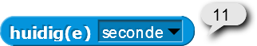
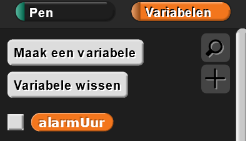

In dit project, ga je een klok modelleren die de tijd op dit moment weergeeft. Je gaat code
schrijven die zorgt dat de secondewijzer, minutenwijzer en uurwijzer correct draaien en de tijd bijhouden.
Om een klok te bouwen moet je uit zien te vinden hoeveel graden de secondewijzer iedere seconde moet
draaien. Hoeveel moeten de minutenwijzer iedere minuut draaien en de uurwijzer ieder uur?
Dit project geeft je drie sprites met uiterlijken voor de secondewijzer, minutenwijzer en uurwijzer. De
rode secondewijzer heeft ook een geluidsbestand voor het tikken van de klok genaamd "Tick".
De volgende blokken kan je gebruiken om je code te schrijven voor de secondewijzer.
In het Waarnemen-menu kan je blokken vinden die de huidige tijd rapporteren. Als bijvoorbeeld de huidige
tijd 16:50:11 is, dan rapporteren deze blokken:

Probeer zelf code te schrijven voor iedere sprite, waarbij je ze vertelt waar ze naar toe moeten wijzen
op dat moment. Kijk alleen naar
Hints om je eigen klok te bouwen als je echt vastzit.
Bij de meeste klokken met wijzers, beweegt de uurwijzer constant, in plaats van dat hij bij ieder nieuw
uur verspringt. De uurwijzer wijst bijvoorbeeld naar een plek tussen 12 en 1 als de tijd
12:26:36 is. Probeer dit ook te implementeren.
Kies of teken uiterlijken voor de wijzers en klok om een eigen stijlvolle klok te maken. Je kan zelf een
afbeelding tekenen of zoeken op internet, je kan een programma gebruiken zoals Photoshop om de
afbeelding aan te passen zodat hij de goeie vorm heeft. Je moet niet vergeten bij de instellingen van de
uiterlijken het draaipunt op de goeie plek te zetten.
Maak een wekker die invoer gebruikt van de gebruiker en geluid maakt als de tijd om is. Je zal een
variabele moeten maken in het Variabelen-menu om de invoer van de gebruiker op te slaan.

Bouw een "grootvaders klok" met een slinger als mechaniek. Of een "koekoeksklok" die een animatie met
een vogel afspeelt op bepaalde momenten.